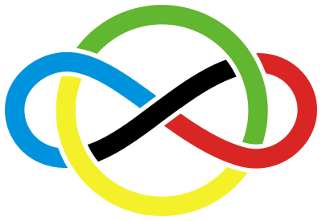

The 2024 IMO results and analysis

The International Mathematical Olympiad (IMO) is the world most pretigious math competition for high school students, attracting contestants from over 100 countries around the world. The first IMO was held in 1959 in Romania with 7 countries and the latest 2024 IMO is hosted by United Kingdom with 108 countries from 5 continents.